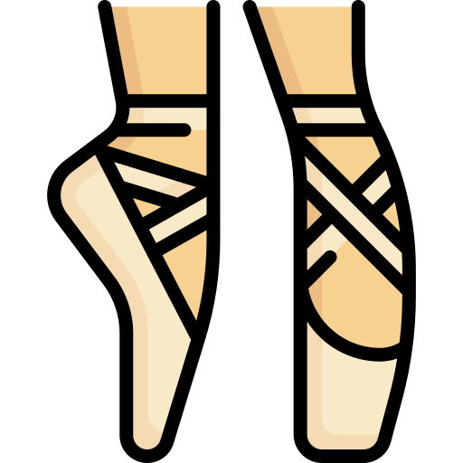
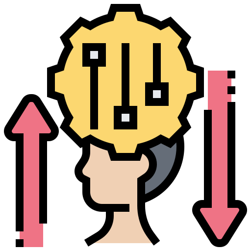
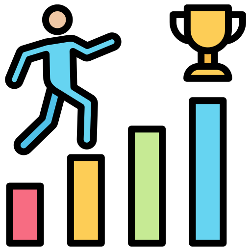

Idiomas que práctico
Español
Nativo
Inglés
Nivel A2.3
Italiano
Nivel A2

Conocimientos en danza
Adaptación al cambio
PerseveranciaMi Breve Historia
Mi historia con la tecnología comenzó en el colegio,
cuando formaba parte del equipo de robótica.
Fue allí donde descubrí mi fascinación por cómo funciona
el mundo digital y la posibilidad de crear cosas nuevas
con la programación. Ese interés creció aún más cuando vi
a mi papá programar; verlo en acción me inspiró a aprender
y seguir su ejemplo, y me dio la motivación para explorar este campo.
Sin embargo, no todo fue un camino recto.
Hubo un momento en que intenté ingresar a la Fuerza
Aérea, pero no lo logré. Aunque ese fracaso me
produjo frustración, fue precisamente mi perseverancia y
determinación lo que me permitió superar ese obstáculo.
En lugar de quedarme estancada, decidí que lo más importante
era seguir adelante, buscando nuevas oportunidades para aprender y crecer.
Siempre he tenido una curiosidad insaciable
por el aprendizaje. A lo largo de los años,
he explorado diversas áreas como el dibujo, la pintura, la musica,
el deporte, pero la mas importante de ellas fue la danza,
en especial el ballet, un arte que me llamó la atención
desde pequeña. Sin embargo, fue hasta este año
que finalmente pude empezar a practicarlo, lo
que me enseñó que nunca es tarde para perseguir
nuestros sueños y pasiones, por más que parezcan inalcanzables.
En mi camino como programadora, encontré un campus que ha sido clave en mi formación, donde he aprendido
no solo programación, sino también habilidades blandas e inglés, lo cual ha sido esencial para mi
desarrollo. La programación es un mundo fascinante, y me encanta descubrir cómo detrás de cada página
web o juego, hay una estructura compleja que las máquinas interpretan a través del código. Esta
capacidad de entender y dar vida a lo que parece invisible me llena de emoción, y me impulsa a seguir
explorando y creando.